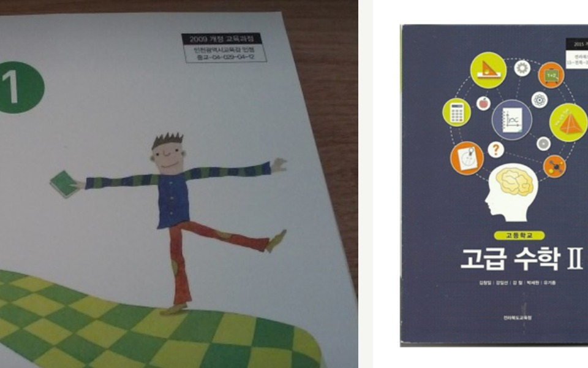
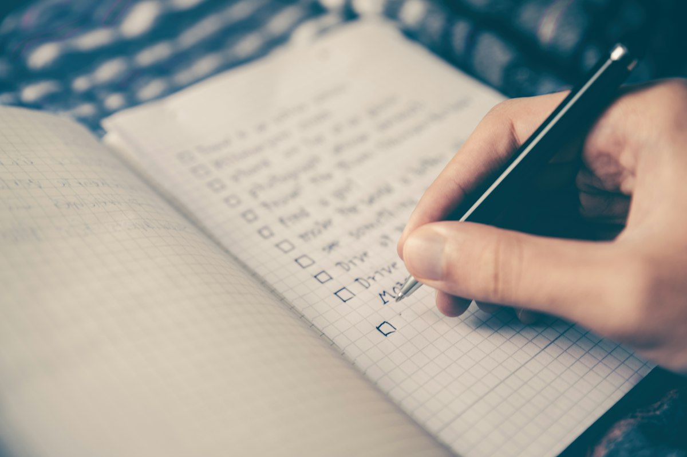

수학교육학 박사가 설계하는 수업
고등학교에서 약 27년간 수학을 가르쳤습니다. 교과서 집필과 수능 출제·검토 경험을 바탕으로, 학생이 어떤 개념에서 막히는지 살피고 스스로 풀이를 설명할 수 있도록 지도합니다.
원장 약력 보기 →
고등학교에서 약 27년간 수학을 가르쳤습니다. 교과서 집필과 수능 출제·검토 경험을 바탕으로, 학생이 어떤 개념에서 막히는지 살피고 스스로 풀이를 설명할 수 있도록 지도합니다.
원장 약력 보기 →교과서의 개념을 자기 말로 설명하고, 문제를 풀 때 어떤 개념을 왜 쓰는지 확인합니다.

어려웠던 문제를 다시 풀고 스스로 해결하는 경험을 쌓습니다. 그 경험이 다음 목표에 도전할 자신감으로 이어집니다.
안녕하세요. 유니더수학 원장입니다. 고등학교에서 약 27년간 수학을 가르쳤고, 수학교육을 연구하며 교과서 집필과 대학수학능력시험 출제·검토에 참여했습니다. 학교와 연구 현장에서 쌓은 경험은 지금 유니더수학의 수업을 설계하는 바탕이 되었습니다.
학생이 문제 앞에서 멈추면 먼저 어디까지 이해했는지 살핍니다. 개념이 헷갈리는 학생과 개념은 알지만 문제의 조건을 식으로 옮기기 어려운 학생에게는 서로 다른 설명이 필요합니다. 막힌 지점을 함께 찾고, 이해한 내용을 자기 말로 설명한 뒤 다시 풀어 보게 합니다.
한 번 막혔던 문제를 스스로 해결하는 경험은 다음 문제에 도전할 자신감으로 이어집니다. 유니더수학에서는 학생들이 그런 경험을 쌓도록 지도합니다.
수업 상담과 학원 문의를 환영합니다. 아래 양식을 작성해 주시면 빠르게 답변 드리겠습니다.